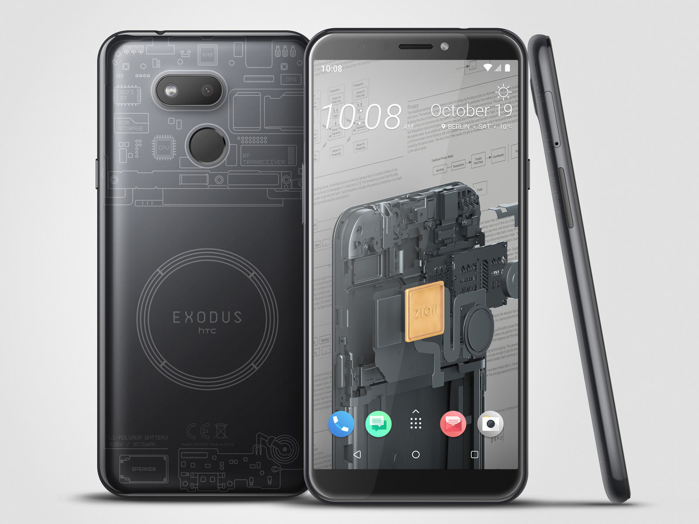

After first teasing the device earlier this year, HTC has detailed its new, more affordable Exodus 1s blockchain smartphone. The highlight feature of the device is that it can function as a full node. This means the phone is able to validate and transmit Bitcoin transactions independent of a centralized third-party. In this way, you don't need to go through an exchange to buy and sell Bitcoin. Likewise, the phone can also be used to trade, lend and borrow the cryptocurrency. The way HTC puts it, what separates the 1s from other smartphones is that you can operate your own decentralized bank out of your pocket.
At least that's the idea. While it's not as intensive as mining Bitcoin, running a full node still requires a lot of computing power. In fact, HTC recommends only using the feature while the phone is connected to WiFi and plugged into its power adapter. The company also plans to roll out full node support to the original Exodus 1, as well.
The 1s can also store the entire Bitcoin ledger. To take advantage of this aspect of the phone, you'll need a microSD card with at least 400GB of storage (sold separately). At the moment, the ledger takes up approximately 260GB, and it's currently growing at a rate of 60GB per year. You need the entire ledger to verify and relay transactions without a third-party.
Like its predecessor, the 1s supports HTC's Zion wallet. The software allows the 1s to store, send and receive a variety of cryptocurrencies, including Bitcoin, Ether, Litecoin and Steller, as well as Etherum-based ERC-20 and ERC-721 tokens.
Besides its crypto-related capabilities, not much stands out about the Exodus 1s from a hardware perspective. Internally, the phone features a Snapdragon 435 processor, a chip that's now more than three years old. Complementing the processor is 4GB of RAM and 64GB of built-in internal storage. The display measures in at 5.7 inches and features an 18:9 aspect ratio with 720p resolution. There's also a 3.5mm headphone jack, a (shudders) MicroUSB port for charging and a rear-facing fingerprint sensor. For taking pictures, the 1s includes a single main 13-megapixel camera and a 13-megapixel selfie camera. The phone will ship with Android Oreo 8.1, software that is about two years old now.
In Europe, the Exodus 1s will cost €219 (approximately $244). The company also plans to sell the device in Taiwan, Saudi Arabia and the United Arab Emirates, with more countries to come at a later date. Naturally, you can also pay for the phone using cryptocurrency, with HTC accepting Bitcoin, Ethereum, Litecoin, Binance or Bitcoin Cash.
As a daily driver, the Exodus 1s won't make sense for most people, even for die-hard crypto-enthusiasts. But it might find some runway as a secondary phone for those that want to dip their toes in the ecosystem. It's just hard to imagine how that's enough to move the needle for HTC.
This blog post is not authored by the blog master. This post is included in a series of blog posts handpicked from various technology news sites.